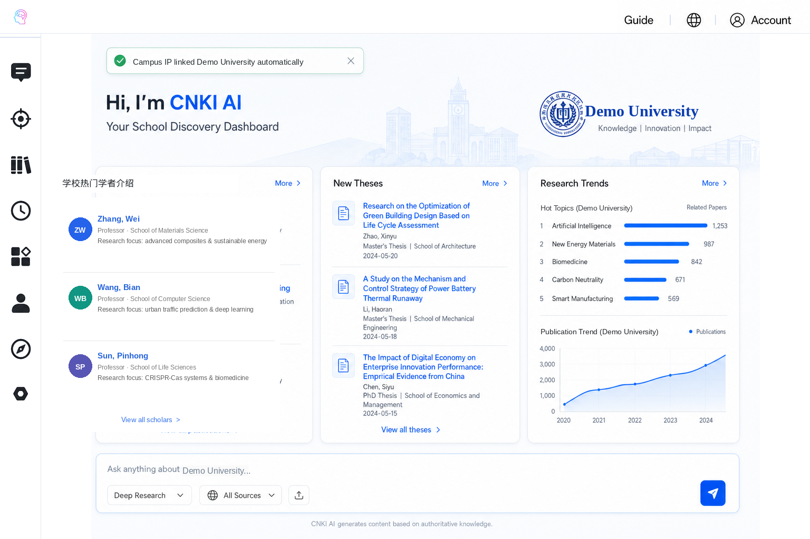
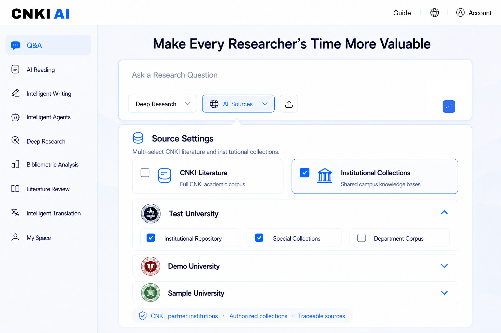
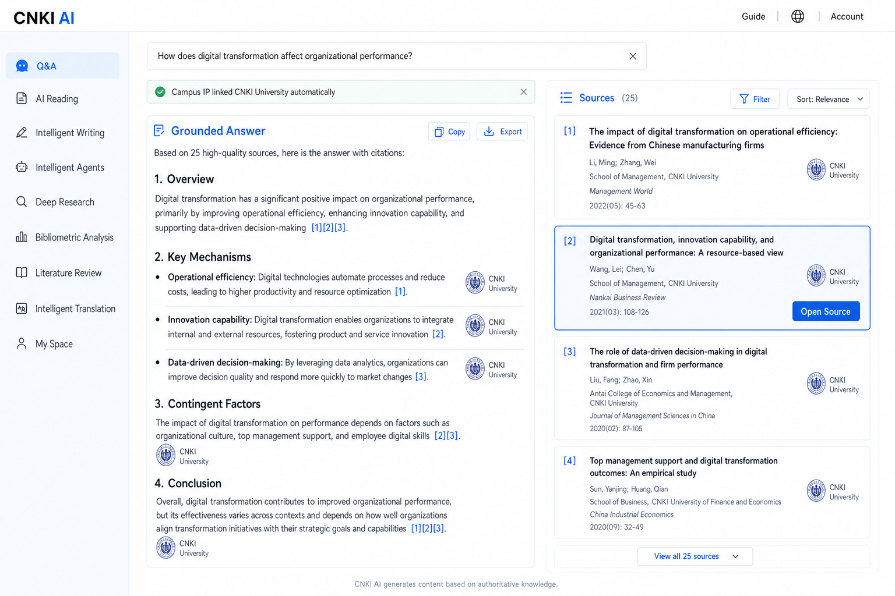
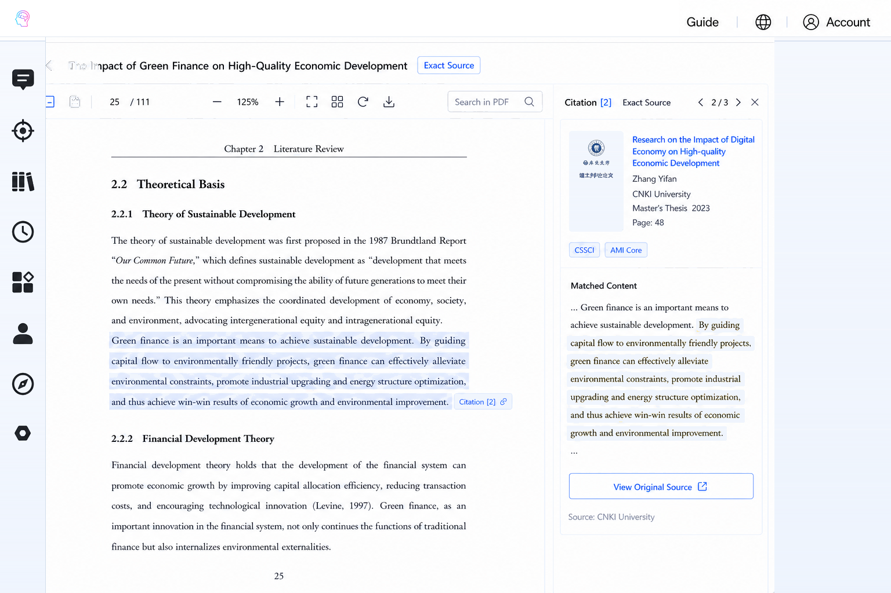
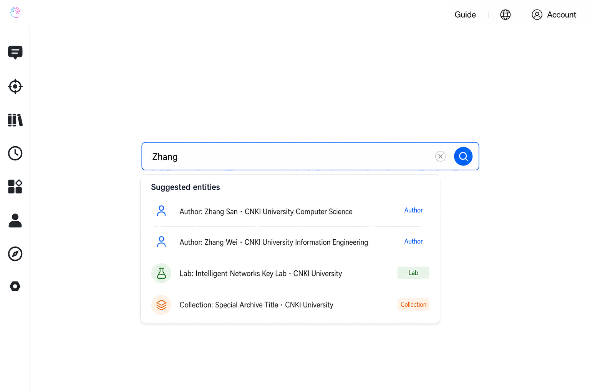
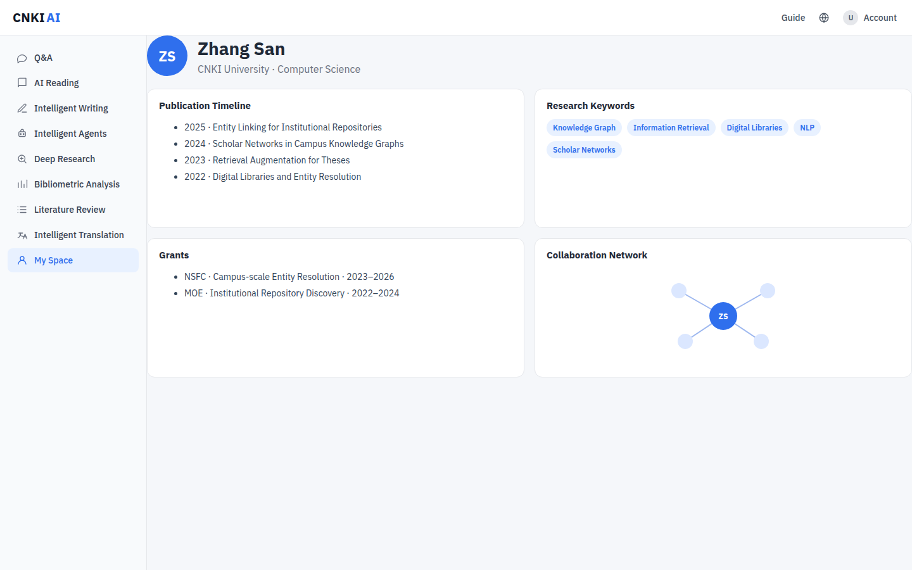
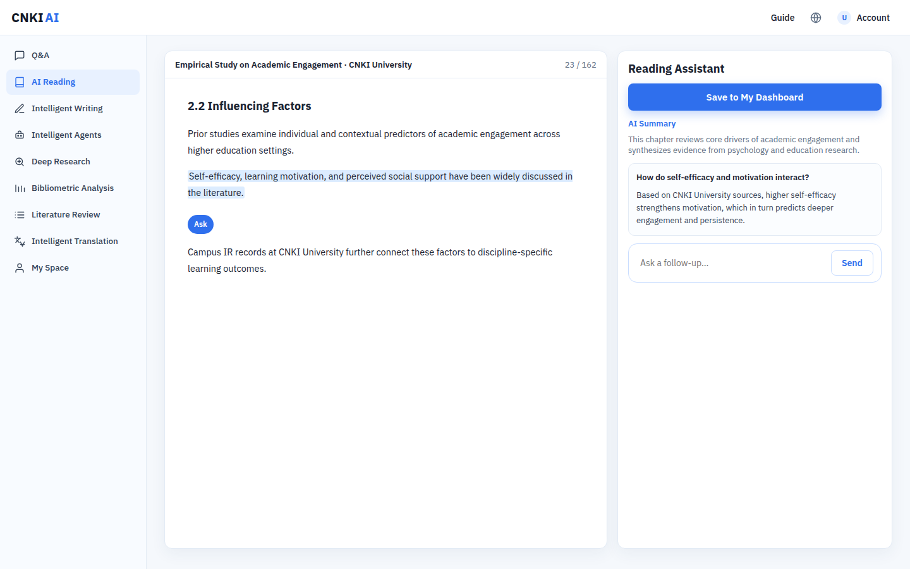

Requirement 1 · 2 screens
Campus identity & school dashboard
Auto-link on campus IP; one-tap institution link off campus; home becomes a school discovery dashboard.
Open HTML 1-1
Open HTML 1-2
1-1 Off-campus: one-click link to CNKI University account.

1-2 After linking: school dashboard with campus publications, theses, and trends.
Requirement 2 · 1 screen
Source settings for scoped answers
Choose campus sources before asking so generation stays within selected collections.
Open HTML 2-1

2-1 Source Settings: limit answers to selected campus libraries.
Requirement 3 · 2 screens
Dual-column source tracing
Grounded answer on the left; matching source cards on the right; jump to the exact PDF passage.
Open HTML 3-1
Open HTML 3-2

3-1 Dual-column view: grounded answer with citations, linked campus sources.

3-2 Open a citation to jump to the exact highlighted passage in the PDF.
Requirement 4 · 2 screens
Entity guidance & scholar profile
Suggest people, labs, and collections as users type; open a scholar profile instead of a flat list.
Open HTML 4-1
Open HTML 4-2

4-1 While typing, suggest campus authors, labs, and collections.

4-2 Select an author to open a campus scholar profile.
Requirement 5 · 1 screen
AI reading companion
Read campus theses with a persistent assistant for summary and follow-ups.
Open HTML 5-1

5-1 AI reading workspace: summarize, ask on selection, save to dashboard.